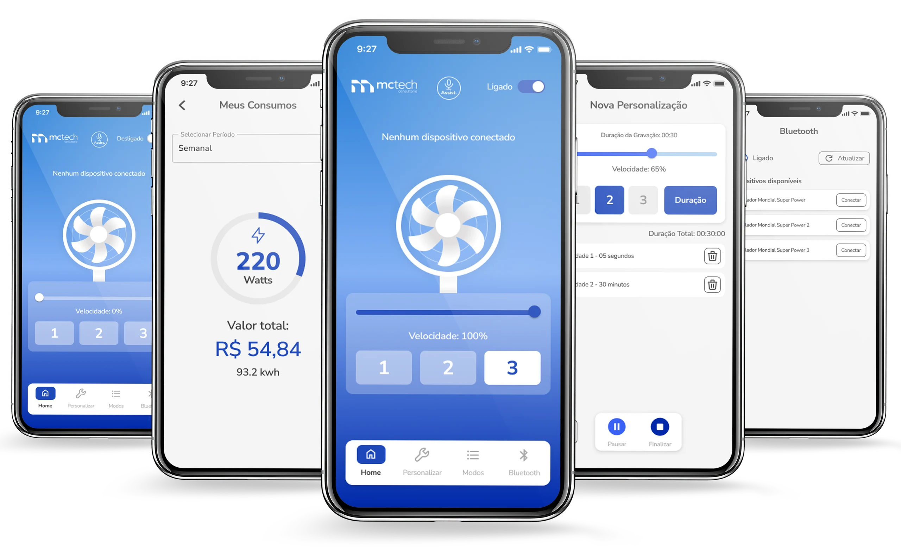

O VentHome surgiu do questionamento de como um ventilador poderia se adaptar organicamente ao nosso ritmo de vida moderno.
O VentHome não nasceu apenas como um controle remoto Bluetooth; ele surgiu do questionamento de como um objeto tão analógico quanto um ventilador poderia se adaptar organicamente ao nosso ritmo de vida moderno, especialmente no clima desafiador que conhecemos bem em Manaus.
Objetivo: O VentHome entrega mais que um controle: ele entrega autonomia. Ao permitir que o usuário crie sua própria curva de ventilação, transformamos um produto de prateleira em um serviço personalizado.

Como designer que transita entre a arquitetura e o digital, sempre me fascinou como a tecnologia pode transformar nossa percepção do ambiente. Identificamos que a frustração do usuário comum vinha da falta de personalização — o "médio" de um aparelho raramente é o "médio" ideal para todos.
Imersão e Empatia: Apliquei o Double Diamond não apenas como metodologia, mas como lente investigativa. Observei que a ventilação é situacional. Queria que o app entendesse o contexto.
Estratégia e Arquitetura: Minha bagagem em Design Systems influenciou a criação de uma estrutura escalável. O objetivo era criar uma hierarquia visual onde o status da conexão Bluetooth fosse onipresente, mas não intrusivo.
Craft e Interface: No desenvolvimento da UI, prototipei interações que transmitissem leveza, usando whitespace para operar sem esforço.
North Star Metric: Design Centrado no Contexto
A base para uma interface conectada, escalável e não intrusiva:

O VentHome entrega autonomia. Este projeto reforçou minha capacidade de traduzir necessidades complexas de hardware para interfaces mobile intuitivas.